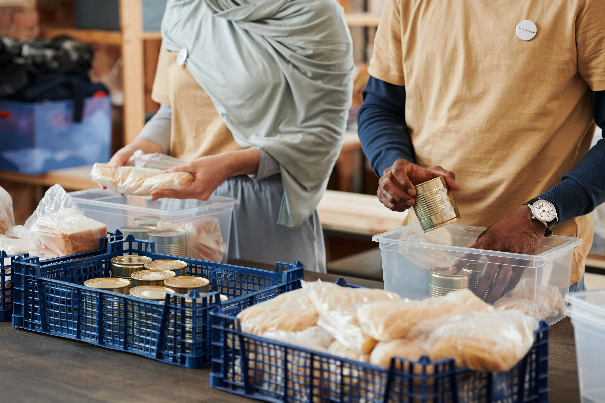

Campanhas de arrecadação
Realizamos campanhas para arrecadar alimentos, roupas, materiais escolares e outros itens destinados às pessoas que necessitam de apoio.

A ONG Mãos Solidárias desenvolve projetos voltados ao apoio de pessoas em situação de vulnerabilidade e ao fortalecimento da solidariedade na comunidade.
Realizamos campanhas para arrecadar alimentos, roupas, materiais escolares e outros itens destinados às pessoas que necessitam de apoio.

Organizamos ações sociais em parceria com voluntários e membros da comunidade para atender diferentes necessidades sociais.
As doações ajudam a manter nossos projetos e permitem que a ONG continue realizando ações de apoio à comunidade.
Para contribuir financeiramente, entre em contato conosco pelos canais informados na página inicial.
Pessoas interessadas em contribuir com seu tempo e suas habilidades podem participar das nossas atividades voluntárias.
Para demonstrar interesse em participar, acesse a página de cadastro e preencha o formulário.
Quero ser voluntário